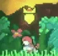
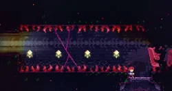
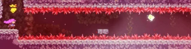

SPEEDRUN
Mecânicas Básicas
O jogador controla a Madeline com o analógico ou o d-pad, e tem 3 opções de movimentos; pular, dash e pegar. Ao longo do jogo, essas mecânicas são aprofundadas
Mecânicas avançadas
Celeste contem um grande número de técnicas que possibilita o jogador ganhar uma velocidade maior que o "normal",(Obs:Essas técnicas não tem um nome oficial, para simplificar, os nomes à seguir são dádos pelos fãs.)exemplos:
Super / Super Inverso
Um super é executado correndo no chão seguido de um salto, o que resulta em um salto de longa distância.
Um super reverso é um super na direção oposta, o que pode ser feito mudando de direção ao pular (ex. traço
para a direita, depois pule para a esquerda). Um super viaja a mesma distância que simplesmente pulando e
depois correndo, então os supers tendem a não fornecer muito benefício ao jogador fora do speedrunning.

Um super reverso no Reflection C-Side
Super Estendido / Super Estendido Reverso
Depois de correr, o cabelo de Madeline fica branco por uma pequena janela antes de ficar vermelho novamente.
Se você fizer um super e pular enquanto o cabelo de Madeline estiver branco, você pode fazer um super e
manter seu traço, que é chamado de super estendido . A capacidade de reter um traço após um super pode
permitir que o jogador atravesse lacunas maiores do que um super normal.
O jogador também pode reverter um super estendido para fazer um super estendido reverso , o que pode
permitir que o jogador se reposicione ou faça um super estendido de uma parede próxima ao chão.
Notavelmente, um super estendido reverso é usado em certos speedruns para pular uma grande parte do 4º
subcapítulo do lado A do Mirror Temple , renunciando à necessidade de coletar as chaves do subcapítulo.

Um Extended Reverse Super
usado para
pular uma grande parte do 4º subcapítulo do Mirror Temple A
Hiper / Hiper reverso
Um hiper é executado correndo para baixo na diagonal e depois pulando antes que o traço termine. Hypers
funcionam como supers, mas dão ao jogador um aumento na velocidade que é significativamente maior do que um
super ou um dash. Madeline viaja mais baixo ao realizar um hiper, permitindo que ela pule por lacunas mais
apertadas do que um super. No entanto, essa altura de salto mais baixa pode fazer com que o jogador atinja
obstáculos que estejam baixos no chão se não for cuidadoso. Este movimento é apresentado ao jogador pela
primeira vez no lado C do Capítulo 8, mas é usado apenas em duas seções (uma no início do nível e outra no
final da sala final).
Tal como acontece com os supers, é possível fazer um hiper reverso mudando de direção ao pular, embora isso
tenha um valor prático limitado.

Primeiro quarto do Core C
Vídeo de uma speedrun